Engineering Notebook
Link
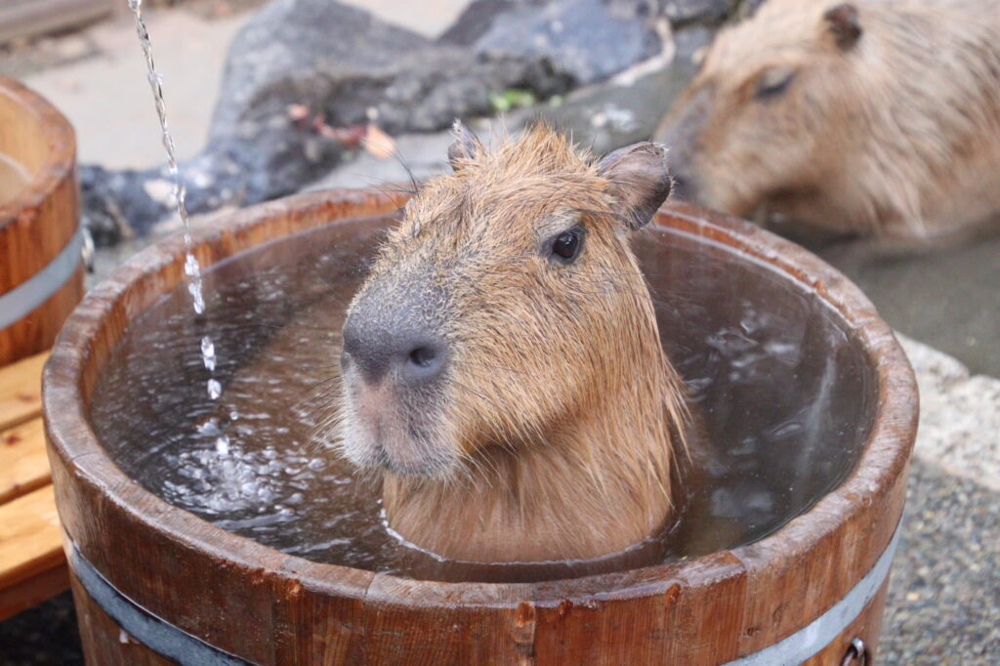
9/8/2022 I cadded Peanut Butter
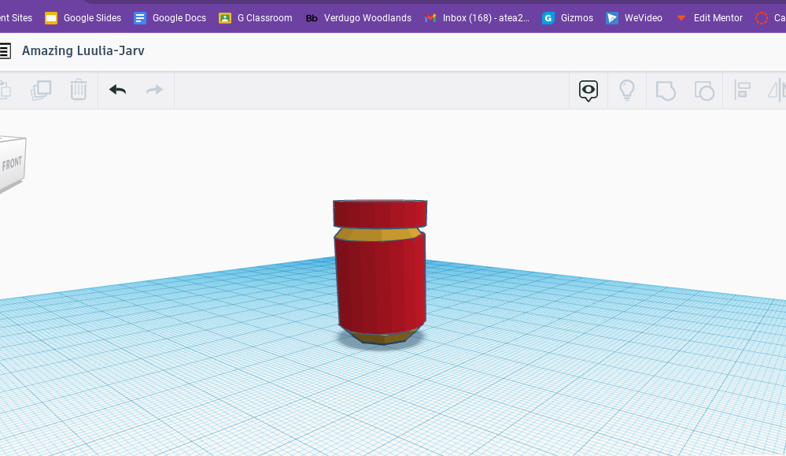
9/16/2022 I built a paper boat to see how much weight could float on a single piece of paper. It last longer than 5 minutes
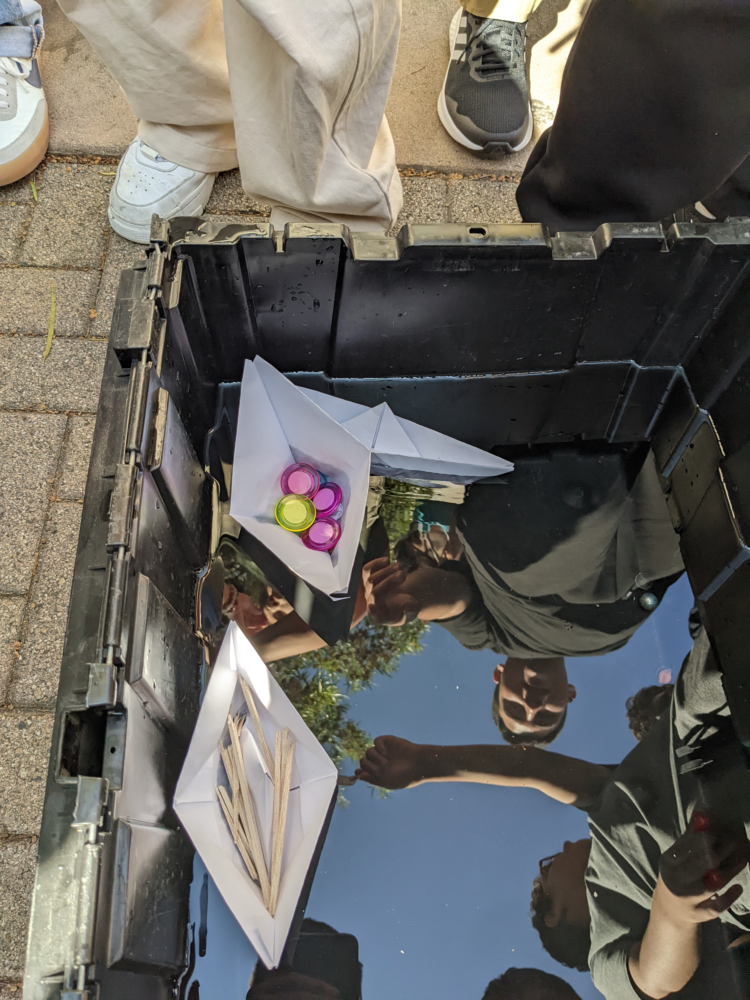
For the past couple of weeks I along with kyle, and collin had to build a structure that would pop a ballon. mr.poole called it a rue goldburg machine. We were then told to combine what we had all built into one giant machine that would pop a ballon. In the end it worked but we struggled throughout the entire project. We had a hard time deciding what we wanted out machine to look like and making it work was another challenge.

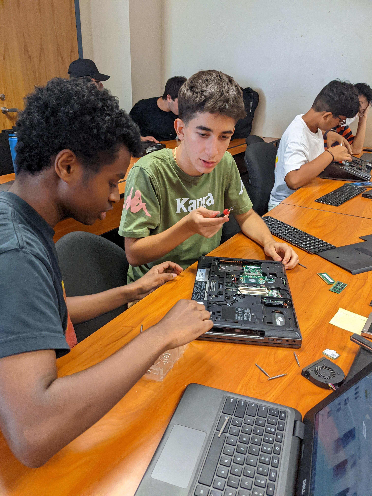
10/7/22 this week we disected a laptop and rebuilt it after we were done. We would then fill out a worksheet that we had to color and label the specific parts, such as the motherboard cpu gpu etc. I had an easy time disecting the computer but had trouble figuring out which pieces were which. I had never disected a laptop before and I had a lot of fun doing this for the first time.

 10/24/22 Last week me and my partner Jordan had to create a rocket that would launch the farthest in our class. We first had to think of our build of materials(BOM) and decide what they would be used for. Next we had to create a cad of our rocket so when it was time to build we knew what to do. After we would then build our rocket the way we designed it from our cads. Friday was the day we would luanch our rocket.
10/24/22 Last week me and my partner Jordan had to create a rocket that would launch the farthest in our class. We first had to think of our build of materials(BOM) and decide what they would be used for. Next we had to create a cad of our rocket so when it was time to build we knew what to do. After we would then build our rocket the way we designed it from our cads. Friday was the day we would luanch our rocket.
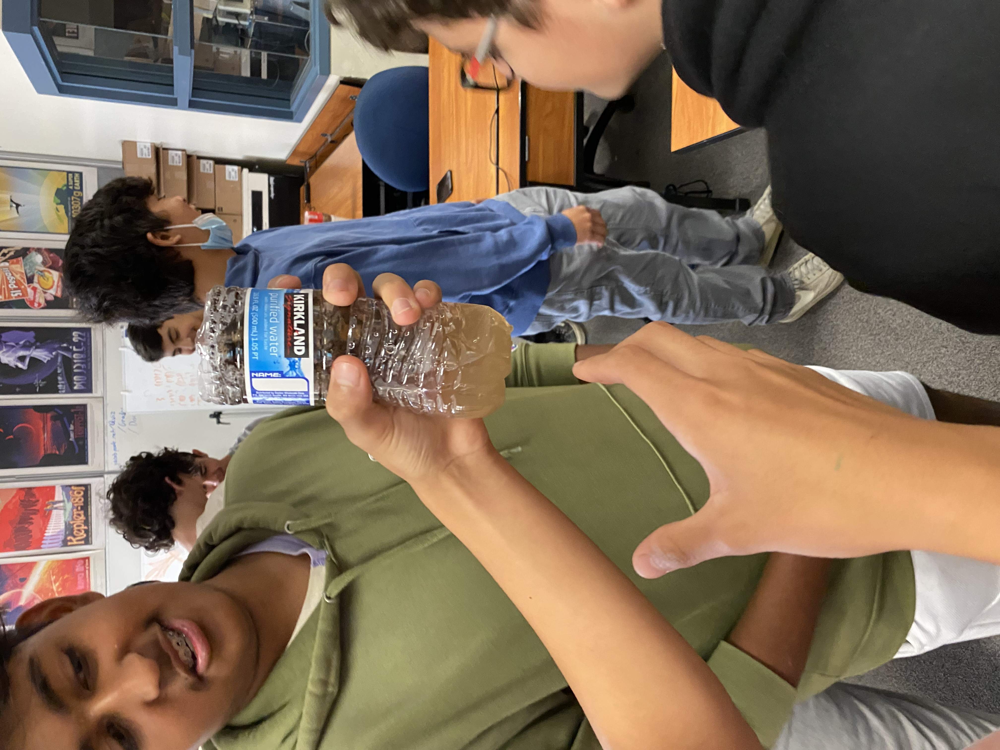
10/26/22 this week I was placed into a group and we had to create a filter. We were given a cotton ball, sand, pebbles, and rocks and a water bottle. We first placed the cotton ball then the sand and then placed the pebbles and rocks into the bottle. We then poured dirty water and it did come out cleaner than it was going before however the water was still brown.
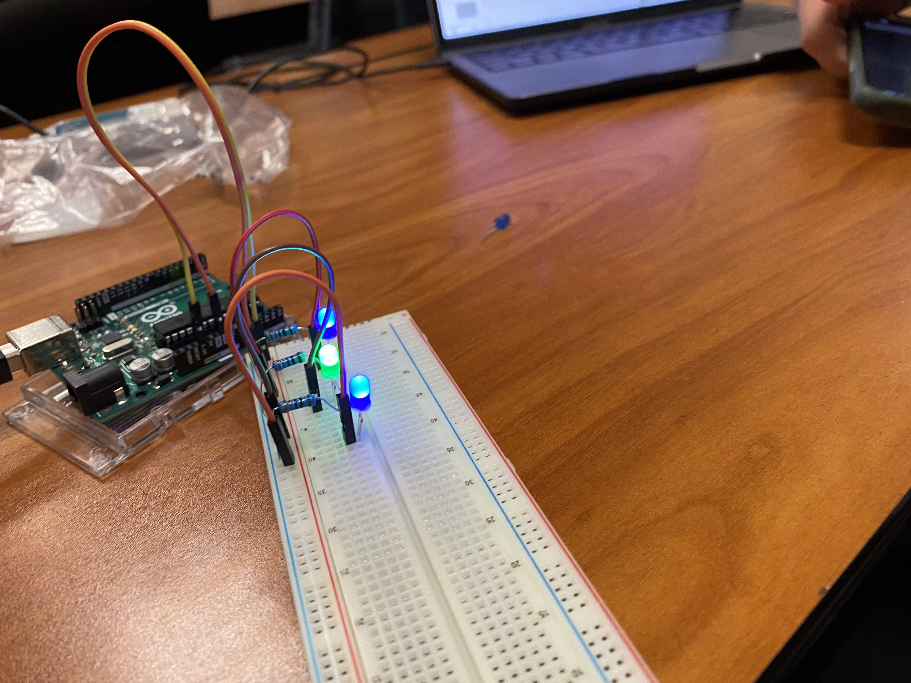
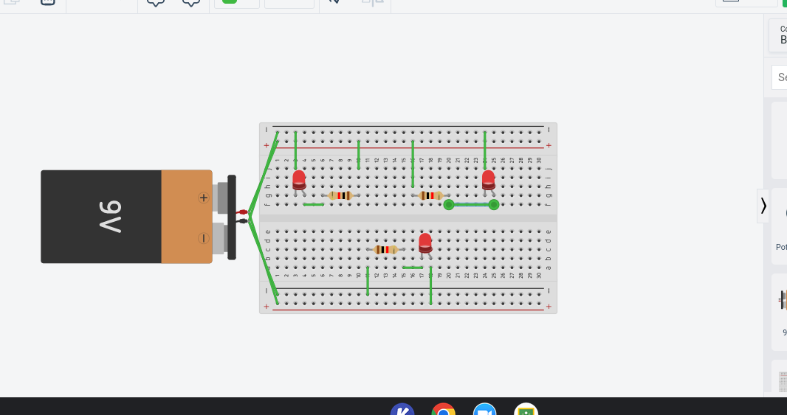
10/10/22
This week mr.poole would teach us about circuts and how they worker. We spent our monday just leraning and understanding what a circut was and how it worked. After we went on tinker cad and created our own circut following the slide mr.poole uploaded. We made a basic circut with a 9v battery, breadboard, resistor, and an LED. Then we created our own circut in real life with a breadboard and everything. Me and my partner Noah spent the entire day making circuts. Then on challenge day we wrote an entire essay analysis on wether we would learn more counting to 1 million or taking a 1 year math class.We also had to prove our answer and convince mr.poole. We agreed that it would be more beneficial to take a math class. However at the end mr.poole said there was no way to prove within the year we would learn anything from the math class. Also counting to 1 million was a goal with an objective end.
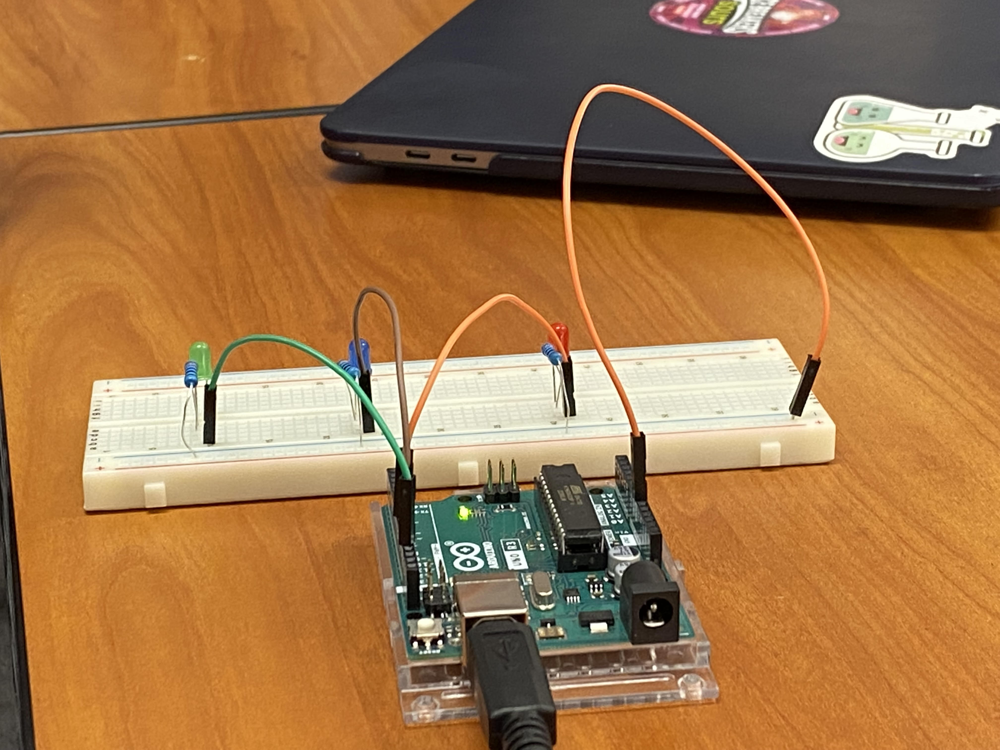
11/16/22
This week we would make code to sequence our arduino LEDs. Me and my partner Noah used A website and just plugged in how long we wanted our delay. Next we showed mr.poole because and he would set up the sequence because it wasn't able to work on our chromebooks. I wasn't here for Thursday or Friday
12/2/22
This week we started off with learning about civil engineering and mr.poole presented a slideshow. We then we assigned groups and I was assigned a group with Ayaan and Dhruv. In this group we had to design a bridge using uncooked noodles that can hold up a bucket of water. On our first day we had to create a cad of our bridge design. We created 2 designs and tried to create our first one. It was just a long strand of noodles that was very thick.
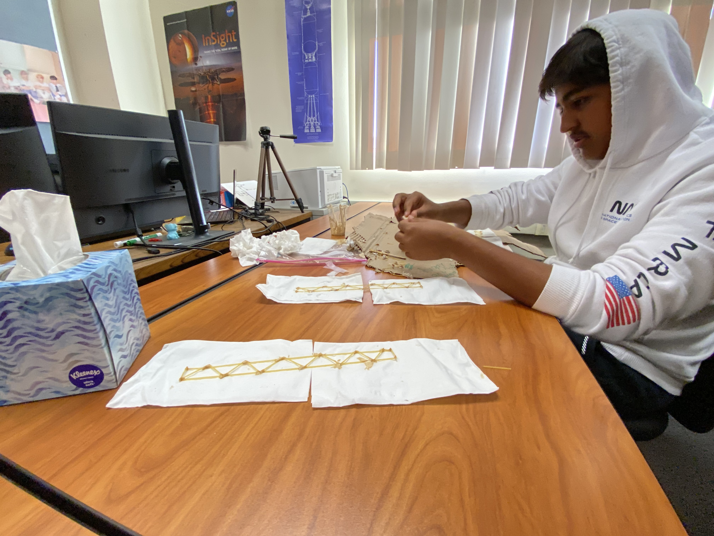
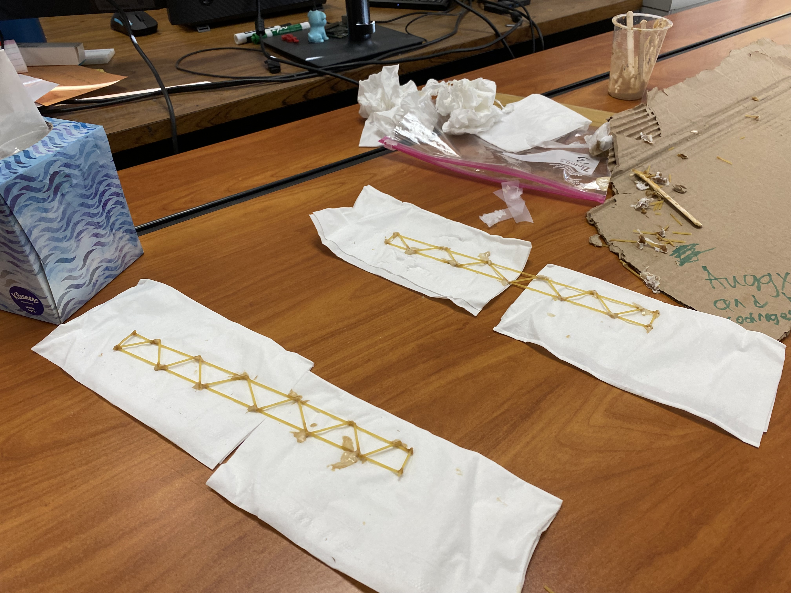
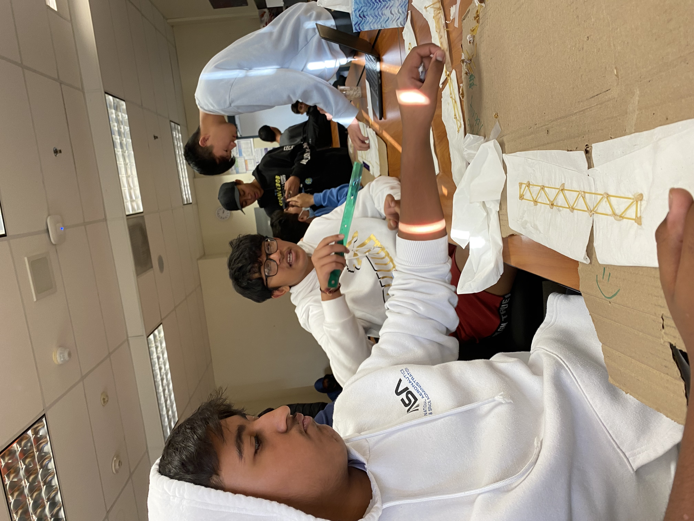
12/9/22
This was the last week of our bridge building and for this part of our design we had to switch our bridge design from the long stand of glued noodles to a criss cross stack of noodles that we stuck together. We decided to make this change because we realized it would be a better use of our limited noodles and we would get more value on reinforcing points of the bridge that would face the most strain. After we finished our design we then had to present the process thoughts as we were creating our bridge using a slideshow. Me ayaan and Druv presented each of our parts. After we finsihed that we then got a chance to test our bridge. Our bridge was able to hold a full cup of water.
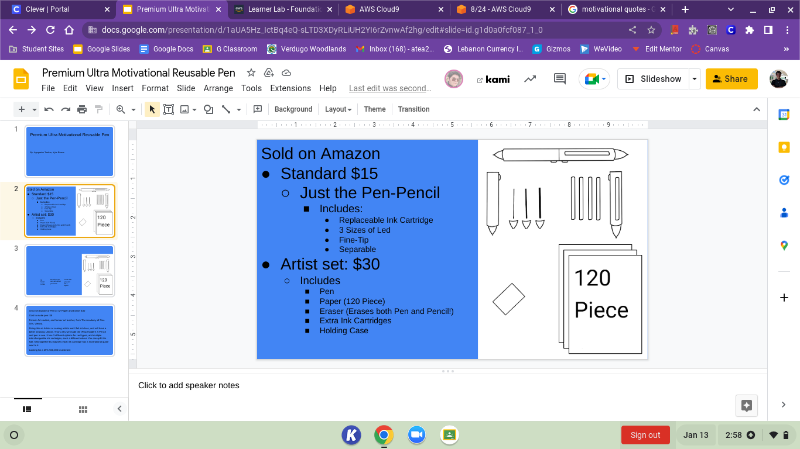
1/13/22
This week in class mr.poole taught us about buisness engineering and about what it does. I learned that buisness engineering is focussed on the buisness side of engineering and how a new build works. The people who work in this field are meant to test the new product and find issues and also try to improve on them. After he taught us about it we then watched an episode of shark tank with someone who was trying to sell a share of his cat puzzle company. He had to try and advertise and get them interested in buying a part of his buisness. After we watched that video our assignment was to create our own project where we are to build a product and then present our product to mr.poole and a staff member and convince them to invest and buy a stock of our buisness.
1/19/22
This week we did our presentations on our products. The way the presentations went was mr.poole and his TA would judge and ask questions then make thier offer to our products. He also allowed anyone in the class was also allowed. Me and Kyle presented our project and the offer we took was $680,000 for 518 of our company. This was the best offer in the class as the only other person asked for $100,000 for %10 of our company. It was a success and me and kyle went back to our seats.
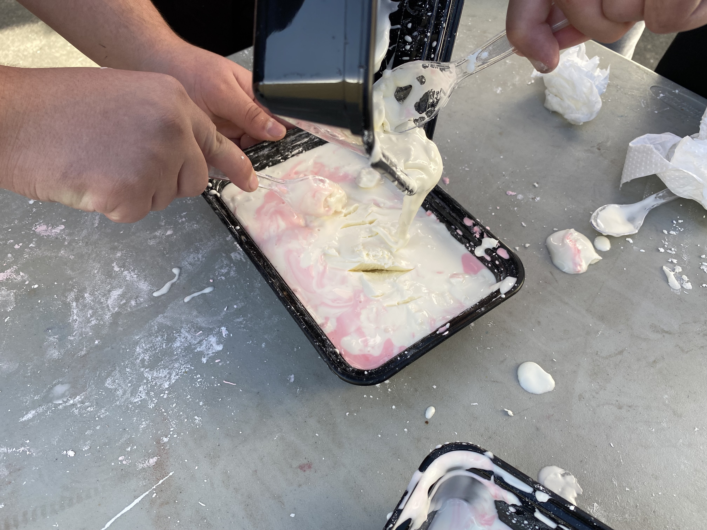
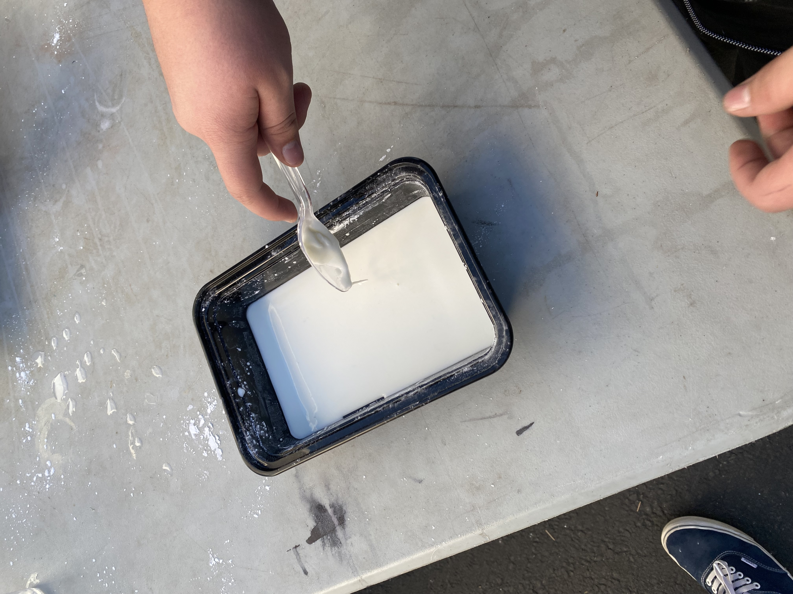
1/27/23
This week learned about oobleck which is a simi-solid substance. Its meant to be a solid and slowly reshape into a liquid. Mr.poole then assigned our groups and we would create our own oobleck trying to find the riht balance between water and cornstarch. For me and my partner it worked and we took some photos. After when me met again on wednesday mr.poole told us we were going to begin making our next project. For the rest of the week we were to write 6 pages on what we would be building. I chose to do a mousetrapcar and have began writing. Next week is when we will begin actually building our new projects. For our project mr.poole wanted us to work alone or with only one other person. He says he wants this project to mostly be our own and so I decided to do this project alone. This will be my first project in this class that I have done alone.